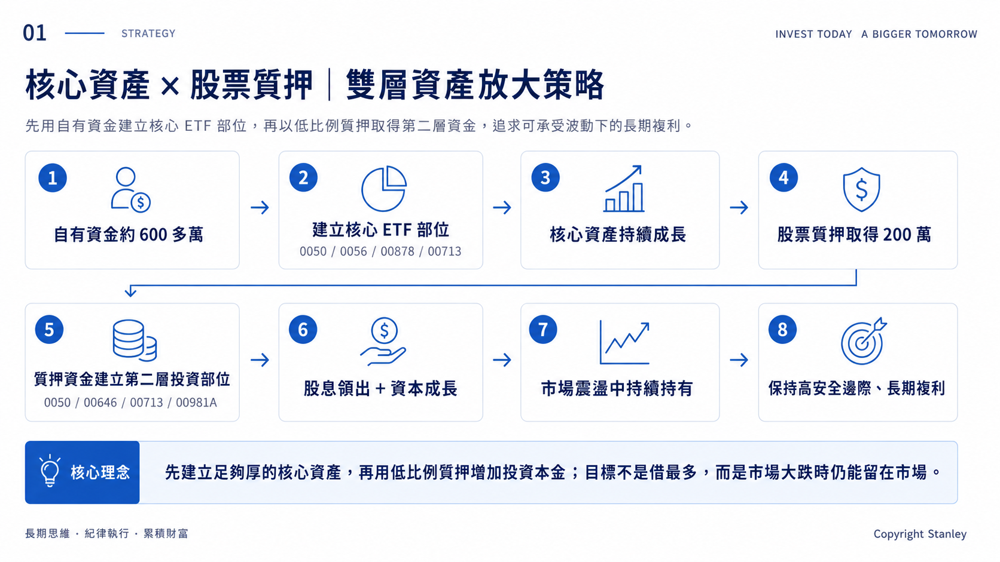

600萬本金怎麼搭出雙層資產
先把核心資產做厚，再用200萬質押建立第二層部位；這一章直接拆解整個實戰結構。
Part 1｜策略總覽
這一章先不談風險與績效，先看整體結構：這 600 萬本金，是怎麼一步一步變成雙層資產。
PHASE 1
先建立第一層資產
01
自有資金約 600 萬
先用自有資金建立第一層核心資產。
02
建立核心 ETF
0050 / 0056 / 00878 / 00713
03
核心資產持續成長
先把資產做扎實，再考慮第二層資金。
PHASE 2
再建立第二層資產
04
股票質押取得 200 萬
利用既有核心資產釋放融資能力。
05
建立第二層投資部位
依市場與資金用途持續調整配置。
PHASE 3
持有、現金流與風險管理
06
股息領出＋資本成長
股息不再投入，作為現金流使用。
07
長期持有
讓核心資產與第二層資產持續參與市場。
08
持續監控風險
維持率、未質押股票與安全線持續追蹤。
核心原則
不是先借錢，再想要買什麼；而是先建立核心資產，再有限度地放大可投資本金。

Slide 1｜雙層資產主流程：先建立第一層核心資產，再透過股票質押建立第二層資產，並持續監控維持率與安全線。
Part 2｜實戰現況
第一層｜核心資產
第一層由自有資金建立，核心標的是 0050（54%）、0056（15%）、00878（15%）、00713（14%）。這一層的任務不是追求短期爆發，而是建立足夠厚的資產基礎。
截至 2026/09/04
核心部位市值 11,186,350 元
核心部位含息損益 +5,563,018 元，績效 +91.8%。
總配息 471,666 元（15 個月）。
股息沒有再投入，作為現金流使用。
第二層｜股票質押 200 萬
在核心資產建立後，我以股票質押取得 200 萬，再建立第二層部位。配置包含 0050（28%）、00646（41%）、00713（3%）、00937B（38%）；2026/05 後提領 49 萬，餘額再轉換至 00981A。
第二層最新狀態
目前市值 2,118,930 元
目前投資損益 +622,323 元。

Slide 2｜實戰現況總覽：整理第一層核心資產、第二層質押部位與最新數字，方便快速掌握目前配置。
本章重點
核心資產先建立，槓桿才有存在的意義。
借錢不是目的；目的，是讓原本已經存在的資產，在風險可承受的前提下，多一層成長機會。